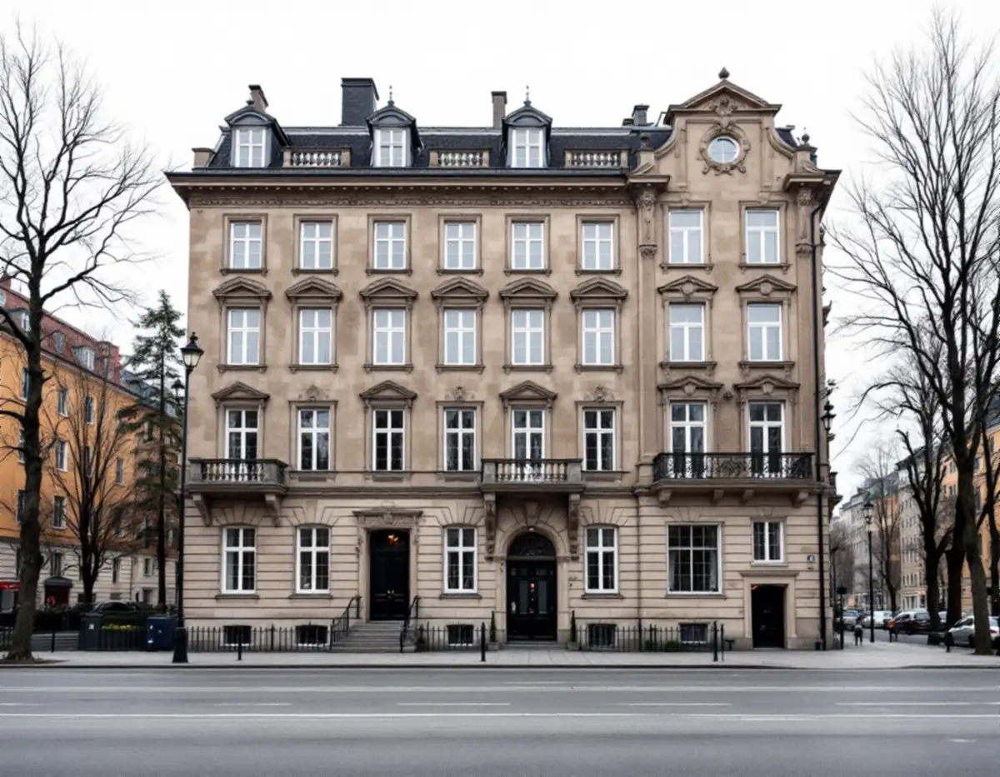
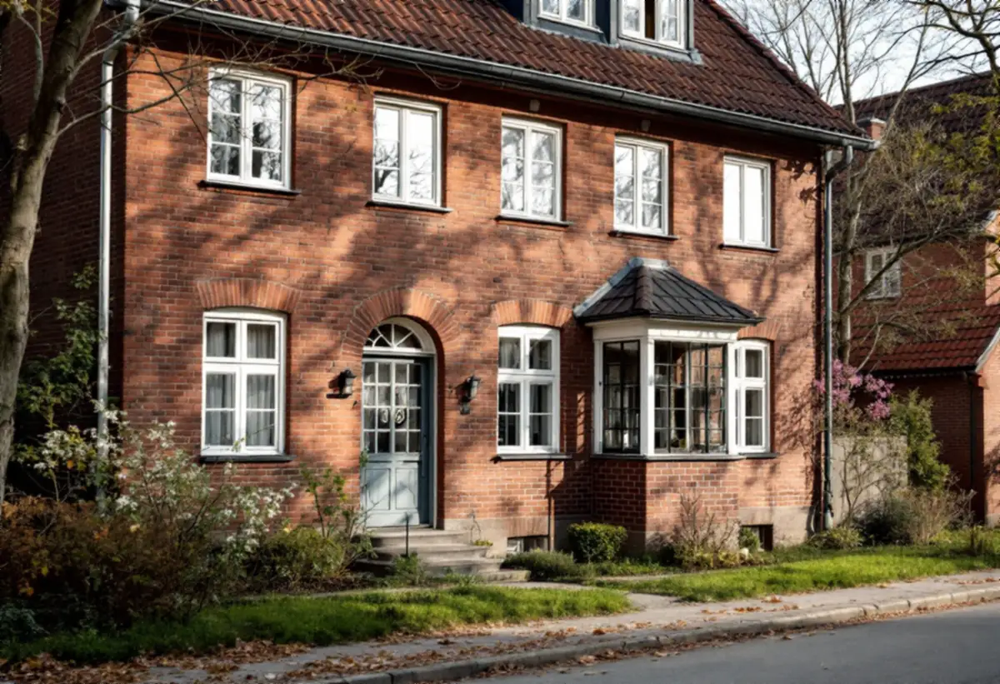
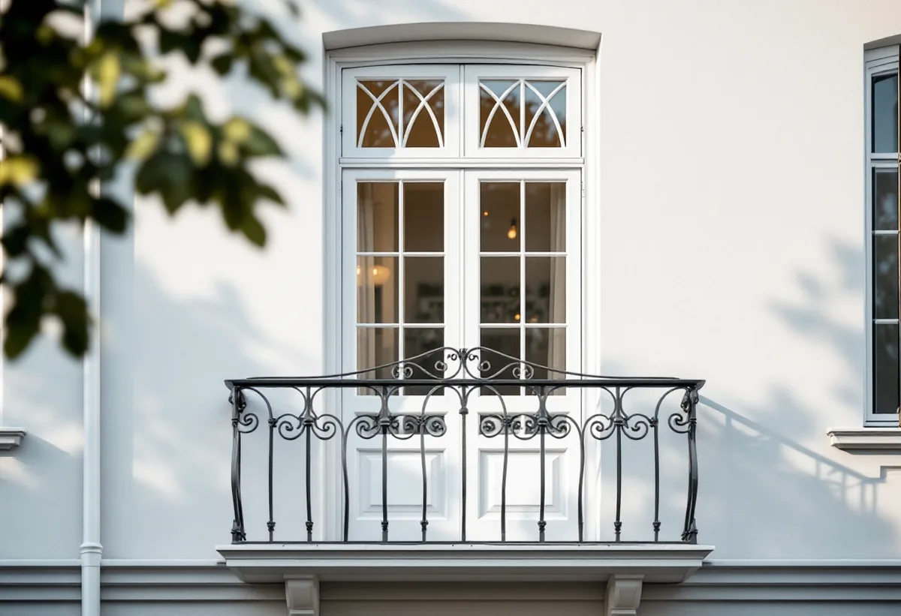

Husets status
Riksintresse, nationalstadspark, klass och detaljplan kontrolleras.
Ett stenhus på Östermalm kan ha gul klass i Stadsmuseets karta och ändå prövas noga när fönstren byts, eftersom det är gatan och kvarteret som ska bevaras. Geal Entreprenad AB byter fönster åt föreningar och fastighetsägare på Östermalm och utgår från husets egna fönster.

Stadens underlag om riksintressena konstaterar att många byggnader i den klassiska stenstaden har relativt låg kulturhistorisk klassificering, gul klass, eftersom de har förändrats sedan de byggdes. Om alla sådana byggnader ersattes skulle stadsmiljön förlora sin historiska prägel, och därför ska betydelsen för stadsmiljön vara avgörande vid prövningen, inte den enskilda byggnadens klassificering.
Bland de värdebärande karaktärsdragen nämns gatufasadernas tydliga uppdelning i sockelvåning och huvudfasad, ofta med markerad takfot, och byggnadsdetaljeringen. Mindre förändringar som vindsinredningar och inre modernisering prövas enligt varsamhetskraven i plan- och bygglagen. Ett fönster som ändrar fasadens rytm eller detaljering är därför en fråga även i ett gulklassat hus.

Lärkstaden från 1909–1918 beskrivs som ett tidigt exempel på en terränganpassad, oregelbunden stadsplan med många tegelhus och planterade förgårdar, och större delen omfattas av en detaljplan från 1952 som reglerar byggrätten. Diplomatstaden byggdes på 1910- och 1920-talen med stora enfamiljshus i tegel kring Engelska kyrkan och skyddas genom miljöbalkens bestämmelser om nationalstadspark.
Stockholms stad skriver att nationalstadsparken räknas in i riksintressena i Stadsmuseets karta, och att du behöver söka bygglov för åtgärder som annars kan vara lovfria om byggnaden ligger inom ett riksintresse för kulturmiljövården. Även nya fönster i en villa i Diplomatstaden kan därför kräva bygglov.
Boverket refererar ett mål där fyra balkongdörrar på gatufasaden till ett jugendhus hade bytts. Material och färg var desamma, men de nya dörrarna hade grövre och klumpigare dimensioner och ändrade profiler. Byggnadsnämnden nekade bygglov i efterhand, och Mark- och miljööverdomstolen delade bedömningen att bytet var en förvanskning.
Det är profilerna, dimensionerna och proportionerna som avgör, inte bara material och kulör. Vi mäter därför upp de befintliga fönstren och dörrarna och ritar de nya med samma mått på karm, båge och spröjs, så att föreningen kan visa hur de nya ska se ut redan i ansökan.
Stadens områdesfakta för 2025 visar 7 721 bostadsrätter i flerbostadshus i Oscars församlingsområde och 5 151 i Hedvig Eleonora, mot ett fåtal småhus. Det är styrelsen som beställer, och bostadsrättslagen kräver styrelsens tillstånd för varje åtgärd som påverkar en lägenhets särskilda kulturhistoriska värden.
Till ansökan tar vi fram fasadritning i 1:100, detaljritning av fönstren i 1:10, 1:20 eller 1:50, kulörer enligt NCS och foton av de berörda fasaderna. Kan bågarna i stället renoveras finns mer under fönsterrenovering på Östermalm, och om tjänsten i stort under fönsterbyte.
Bland stenstadens värdebärande karaktärsdrag nämner stadens underlag sluttande tak, oftast plåttäckta, med en lutning på upp till 45 grader från fasaden, som ger ett karaktäristiskt taklandskap. Stockholms stad skriver att du ofta behöver bygglov för att sätta in nya takfönster, och att det beror på vilken byggnad och vilken fasad ändringen gäller.
Ska vinden få nya fönster i samband med att gatufönstren byts tar vi med takfönstren i samma ansökan, med en takplan i skala 1:100 som visar både de nya fönstren och de befintliga installationerna på taket. Eftersom taklandskapet räknas till de värdebärande dragen ritar vi in takfönstren i fasadritningen också.

Riksintresse, nationalstadspark, klass och detaljplan kontrolleras.
Fönster och dörrar mäts upp och fotograferas på gata och gård.
Tillverkning, montage och efterarbete står var för sig.
Ritningar, kulörer och foton tas fram till ansökan.
Fönster och dörrar byts i etapper och tätas och fodras.
Vi går igenom resultatet med styrelsen eller fastighetsägaren.
I en bostadsrätt ger Skatteverket inget rotavdrag för att byta fönster, och inte heller för att arbeta mellan eller på utsidan av befintliga fönster. Arbete på insidan, som att byta innerfönster och fönsterfoder eller glaset i den inre bågen, kan ge avdrag om du ansvarar för det enligt stadgarna.
För en villa som du äger och bor i, till exempel i Diplomatstaden, ger det rotavdrag att byta ut fönster. Avdraget är högst 30 procent av arbetskostnaden och högst 50 000 kronor per person och år.
Antal fönster och dörrar, profiler och spröjs, glas och beslag, om fönster ska tillverkas efter uppmätning, ställning mot gatan och om bygglovshandlingar behövs. Efter ett gratis platsbesök får du ett skriftligt kostnadsförslag.
Byta eller renovera fönster.
Fönsterbyte i Stockholm →Stenstad, Lärkstaden, Diplomatstaden och Gärdet.
Takrenovering på Östermalm →Kulturvärden, förvanskningsförbud och klassning.
Badrumsrenovering på Östermalm →Slå ihop två lägenheter.
Byggföretag på Östermalm →Husets ursprungliga kulör.
Fasadmålning på Östermalm →Gatufasad, gårdsfasad och lovfrågan.
Fasadrenovering på Östermalm →Fönster och glas i Gärdets 1930-talshus.
Fönsterrenovering på Östermalm →Mönsterparkett, lack och olja.
Golvläggare på Östermalm →Slipa om eller underhålla lackade golv.
Golvslipning på Östermalm →Stora lägenheter och kulturvärden.
Köksrenovering på Östermalm →Limfärg i taken, dekor och lov.
Målare på Östermalm →Taklandskapet och balkongerna.
Plåtslagare på Östermalm →Lagning av dörrar, paneler och fasta snickerier.
Snickare på Östermalm →Klassade våningar och bostadsrätt.
Tapetsering på Östermalm →